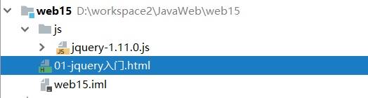
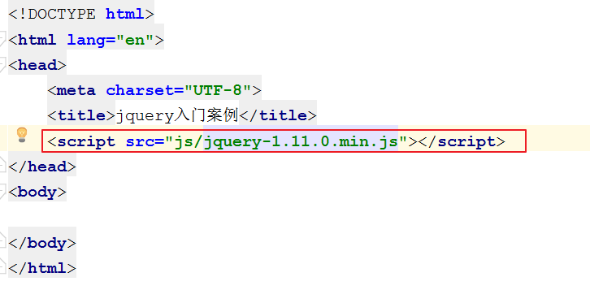
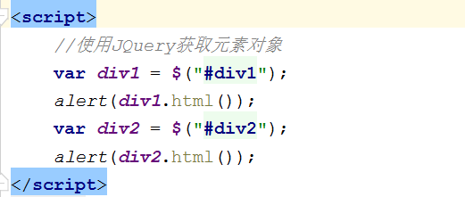
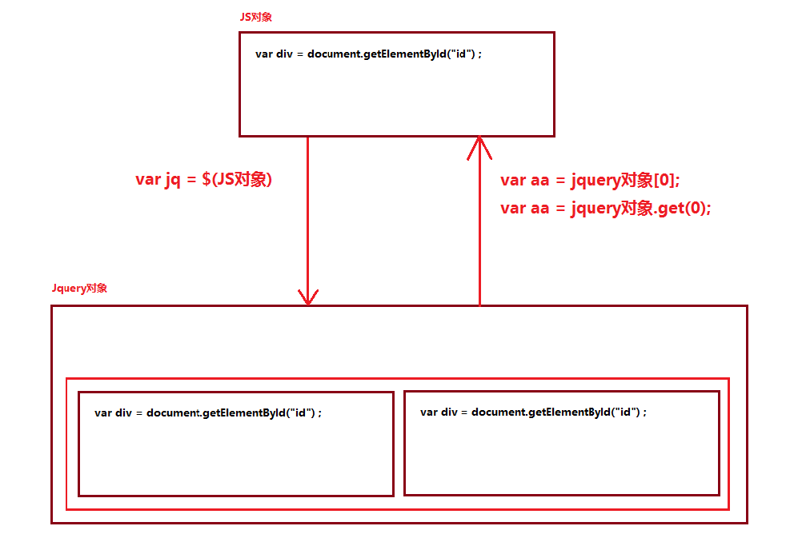

01-Jquery基础一. 今日目标二. 今日内容(一) 基本概念1. Jquery概念2. 快速入门使用步骤Jq对象和JS对象(二) 选择器1. 基本操作事件绑定入口函数样式控制2. 基本选择器基本语法示例代码3. 层级选择器基本语法示例代码4. 属性选择器基本语法示例代码5. 过滤选择器基本语法示例代码6. 表单过滤选择器基本语法示例代码(三) DOM操作1. 内容操作2. 属性操作通用属性操作class属性操作3. CRUD操作4. 案例练习案例一 : 隔行换色案例二 : 全选全不选案例三 : qq表情选择案例四 : 下拉列表左右选择(四) jQuery动画操作1. 显示和隐藏元素2. 滑动显示和隐藏方式3. 淡入淡出显示和隐藏方式(五) Jquery遍历操作1. js的遍历方式2. jq的遍历方式1. jq对象.each(callback)2. $.each(object, [callback])3. for..of: jquery 3.0 版本之后提供的方式
xjQuery是一个快速、简洁的JavaScript框架，是继Prototype之后又一个优秀的JavaScript代码库（或JavaScript框架）。jQuery设计的宗旨 是“write Less，Do More”，即倡导写更少的代码，做更多的事情。它封装JavaScript常用的功能代码，提供一种简便的JavaScript设计模式，优 化HTML文档操作、事件处理、动画设计和Ajax交互。JavaScript框架：本质上就是一些js文件，封装了js的原生代码而已目前jQuery有三个大版本：1.x：兼容ie678,使用最为广泛的，官方只做BUG维护，功能不再新增。因此一般项目来说，使用1.x版本就可以了，最终版本：1.12.4 (2016年5月20日)2.x：不兼容ie678，很少有人使用，官方只做BUG维护，功能不再新增。如果不考虑兼容低版本的浏览器可以使用2.x，最终版本：2.2.4 (2016年5月20日)3.x：不兼容ie678，只支持最新的浏览器。除非特殊要求，一般不会使用3.x版本的，很多老的jQuery插件不支持这个版本。目前该版本是官方主要更新维护的版本。最新版本：3.2.1（2017年3月20日）jquery-xxx.js 与 jquery-xxx.min.js区别：1. jquery-xxx.js：开发版本。给程序员看的，有良好的缩进和注释。体积大一些2. jquery-xxx.min.js：生产版本。程序中使用，没有缩进。体积小一些。程序加载更快
xxxxxxxxxx1. 下载JQuery2. 在项目中引入JQuery的js文件：导入min.js文件3. 在页面中使用`<script src="jquery路径">`引入jquery4. 使用JQuery
1. 创建项目(静态web项目和JAVAEE项目均可),引入JQuery的js文件：导入min.js文件 
2. 创建html页面,在页面中使用<script src="jquery路径">引入jquery

3. 使用JQuery


xxxxxxxxxx1. JQuery对象在操作时，更加方便。2. JQuery对象和js对象方法不通用的.3. 两者相互转换* jq -- > js : jq对象[索引] 或者 jq对象.get(索引)* js -- > jq : $(js对象)
xxxxxxxxxx<body><div id="div1">div1....</div><div id="div2">div2....</div><script> //获取JS对象 var div1 = document.getElementById("div1"); //JS对象转化为Jquery对象 var $div1 = $(div1); alert($div1); //Jquery对象转化为JS对象 // var div2 = $div1.get(0); var div2 = $div1[0]; alert(div2);</script></body>作用 : 筛选具有相似特征的元素
xxxxxxxxxx// 给b1按钮添加单击事件window.onload = function(){ //1.获取b1按钮,给b1按钮绑定事件 $("#b1").click(function(){ alert("abc"); });}xxxxxxxxxx//jquery入口函数(dom文档加载完成之后执行该函数中的代码)$(function () { //1.获取b1按钮 $("#b1").click(function(){ alert("abc"); });});xxxxxxxxxxwindow.onload 和 $(function) 区别* window.onload 只能定义一次,如果定义多次，后边的会将前边的覆盖掉* $(function)可以定义多次的。
xxxxxxxxxx$(function(){ // $("#div1").css("background-color","red"); $("#div1").css("backgroundColor","pink");});xxxxxxxxxx1. 标签选择器（元素选择器）* 语法： $("html标签名") 获得所有匹配标签名称的元素2. id选择器* 语法： $("#id的属性值") 获得与指定id属性值匹配的元素3. 类选择器* 语法： $(".class的属性值") 获得与指定的class属性值匹配的元素4. 并集选择器：* 语法： $("选择器1,选择器2....") 获取多个选择器选中的所有元素
xxxxxxxxxx<script src="../js/jquery-3.3.1.min.js"></script><script type="text/javascript"> $(function () { // <input type="button" value="改变 id 为 one 的元素的背景色为 红色" id="b1"/> $("#b1").click(function () { $("#one").css("backgroundColor","pink"); }); // <input type="button" value=" 改变元素名为 <div> 的所有元素的背景色为 红色" id="b2"/> $("#b2").click(function () { $("div").css("backgroundColor","pink"); }); // <input type="button" value=" 改变 class 为 mini 的所有元素的背景色为 红色" id="b3"/> $("#b3").click(function () { $(".mini").css("backgroundColor","pink"); }); // <input type="button" value=" 改变所有的<span>元素和 id 为 two 的元素的背景色为红色" id="b4"/> $("#b4").click(function () { $("span,#two").css("backgroundColor","pink"); }); });</script>xxxxxxxxxx1. 后代选择器* 语法： $("A B ") 选择A元素内部的所有B元素2. 子选择器* 语法： $("A > B") 选择A元素内部的所有B子元素
xxxxxxxxxx<script src="../js/jquery-3.3.1.min.js"></script><script type="text/javascript">$(function () { // <input type="button" value=" 改变 <body> 内所有 <div> 的背景色为红色" id="b1"/> $("#b1").click(function () { $("body div").css("backgroundColor","pink"); }); // <input type="button" value=" 改变 <body> 内子 <div> 的背景色为 红色" id="b2"/> $("#b2").click(function () { $("body > div").css("backgroundColor","pink"); }); });</script>xxxxxxxxxx1. 属性名称选择器* 语法： $("A[属性名]") 包含指定属性的选择器2. 属性选择器* 语法： $("A[属性名='值']") 包含指定属性等于指定值的选择器3. 复合属性选择器* 语法： $("A[属性名='值'][]...") 包含多个属性条件的选择器
xxxxxxxxxx <script src="../js/jquery-3.3.1.min.js"></script> <script type="text/javascript">$(function () { // <input type="button" value=" 含有属性title 的div元素背景色为红色" id="b1"/> $("#b1").click(function () { $("div[title]").css("backgroundColor","pink"); }); // <input type="button" value=" 属性title值等于test的div元素背景色为红色" id="b2"/> $("#b2").click(function () { $("div[title='test']").css("backgroundColor","pink"); }); // <input type="button" value=" 属性title值不等于test的div元素(没有属性title的也将被选中)背景色为红色" id="b3"/> $("#b3").click(function () { $("div[title!='test']").css("backgroundColor","pink"); }); // <input type="button" value=" 属性title值 以te开始 的div元素背景色为红色" id="b4"/> $("#b4").click(function () { $("div[title^='te']").css("backgroundColor","pink"); }); // <input type="button" value=" 属性title值 以est结束 的div元素背景色为红色" id="b5"/> $("#b5").click(function () { $("div[title$='est']").css("backgroundColor","pink"); }); // <input type="button" value="属性title值 含有es的div元素背景色为红色" id="b6"/> $("#b6").click(function () { $("div[title*='es']").css("backgroundColor","pink"); }); // <input type="button" value="选取有属性id的div元素，然后在结果中选取属性title值含有“es”的 div 元素背景色为红色" id="b7"/> $("#b7").click(function () { $("div[id][title*='es']").css("backgroundColor","pink"); });});</script>xxxxxxxxxx1. 首元素选择器* 语法： :first 获得选择的元素中的第一个元素2. 尾元素选择器* 语法： :last 获得选择的元素中的最后一个元素3. 非元素选择器* 语法： :not(selector) 不包括指定内容的元素4. 偶数选择器* 语法： :even 偶数，从 0 开始计数5. 奇数选择器* 语法： :odd 奇数，从 0 开始计数6. 等于索引选择器* 语法： :eq(index) 指定索引元素7. 大于索引选择器* 语法： :gt(index) 大于指定索引元素8. 小于索引选择器* 语法： :lt(index) 小于指定索引元素9. 标题选择器* 语法： :header 获得标题（h1~h6）元素，固定写法
xxxxxxxxxx<script src="../js/jquery-3.3.1.min.js"></script><script type="text/javascript">$(function () { // <input type="button" value=" 改变第一个 div 元素的背景色为 红色" id="b1"/> $("#b1").click(function () { $("div:first").css("backgroundColor","pink"); }); // <input type="button" value=" 改变最后一个 div 元素的背景色为 红色" id="b2"/> $("#b2").click(function () { $("div:last").css("backgroundColor","pink"); }); // <input type="button" value=" 改变class不为 one 的所有 div 元素的背景色为 红色" id="b3"/> $("#b3").click(function () { $("div:not(.one)").css("backgroundColor","pink"); }); // <input type="button" value=" 改变索引值为偶数的 div 元素的背景色为 红色" id="b4"/> $("#b4").click(function () { $("div:even").css("backgroundColor","pink"); }); // <input type="button" value=" 改变索引值为奇数的 div 元素的背景色为 红色" id="b5"/> $("#b5").click(function () { $("div:odd").css("backgroundColor","pink"); }); // <input type="button" value=" 改变索引值为大于 3 的 div 元素的背景色为 红色" id="b6"/> $("#b6").click(function () { $("div:gt(3)").css("backgroundColor","pink"); }); // <input type="button" value=" 改变索引值为等于 3 的 div 元素的背景色为 红色" id="b7"/> $("#b7").click(function () { $("div:eq(3)").css("backgroundColor","pink"); }); // <input type="button" value=" 改变索引值为小于 3 的 div 元素的背景色为 红色" id="b8"/> $("#b8").click(function () { $("div:lt(3)").css("backgroundColor","pink"); }); // <input type="button" value=" 改变所有的标题元素的背景色为 红色" id="b9"/> $("#b9").click(function () { $(":header").css("backgroundColor","pink"); });});</script>xxxxxxxxxx1. 可用元素选择器* 语法： :enabled 获得可用元素2. 不可用元素选择器* 语法： :disabled 获得不可用元素3. 选中选择器* 语法： :checked 获得单选/复选框选中的元素4. 选中选择器* 语法： :selected 获得下拉框选中的元素
xxxxxxxxxx<script src="../js/jquery-3.3.1.min.js"></script><script type="text/javascript">$(function () { // <input type="button" value=" 利用 jQuery 对象的 val() 方法改变表单内可用 <input> 元素的值" id="b1"/> $("#b1").click(function () { $("input[type='text']:enabled").val("aaa"); }); // <input type="button" value=" 利用 jQuery 对象的 val() 方法改变表单内不可用 <input> 元素的值" id="b2"/> $("#b2").click(function () { $("input[type='text']:disabled").val("aaa"); }); // <input type="button" value=" 利用 jQuery 对象的 length 属性获取复选框选中的个数" id="b3"/> $("#b3").click(function () { alert($("input[type='checkbox']:checked").length); }); // <input type="button" value=" 利用 jQuery 对象的 length 属性获取下拉框选中的个数" id="b4"/> $("#b4").click(function () { alert($("#job > option:selected").length); }); });</script>常用方法
xxxxxxxxxx1. html(): 获取/设置元素的标签体内容 <a><font>内容</font></a> --> <font>内容</font>2. text(): 获取/设置元素的标签体纯文本内容 <a><font>内容</font></a> --> 内容3. val()： 获取/设置元素的value属性值
示例代码
xxxxxxxxxx<script src="../js/jquery-3.3.1.min.js"></script><script>$(function () { //获取myinput 的value值 var value = $("#myinput").val(); alert(value); //设置myinput 的value值 $("#myinput").val("李四"); //获取mydiv的标签体内容 var html = $("#mydiv").html(); alert(html); //设置mydiv的标签体内容 $("#mydiv").html("<p>aaaa</p>"); //获取mydiv文本内容 var text = $("#mydiv").text(); alert(text); //设置mydiv文本内容 $("#mydiv").text("bbb");});</script>常用方法
xxxxxxxxxx1. attr(): 获取/设置元素的属性2. removeAttr():删除属性3. prop():获取/设置元素的属性4. removeProp():删除属性* attr和prop区别？1. 如果操作的是元素的固有属性，则建议使用prop2. 如果操作的是元素自定义的属性，则建议使用attr
示例代码
xxxxxxxxxx<script src="../js/jquery-3.3.1.min.js"></script><script type="text/javascript">$(function () { //获取北京节点的name属性值 var name = $("#bj").attr("name"); //alert(name); //设置北京节点的name属性的值为dabeijing $("#bj").attr("name","dabeijing"); //新增北京节点的discription属性 属性值是didu $("#bj").attr("discription","didu"); //删除北京节点的name属性并检验name属性是否存在 $("#bj").removeAttr("name"); //获得hobby的的选中状态 var checked = $("#hobby").prop("checked"); alert(checked); //var checked = $("#hobby").attr("checked"); //获取不到，弹出undefined});</script>常用操作
xxxxxxxxxx1. addClass():添加class属性值2. removeClass():删除class属性值3. toggleClass():切换class属性* toggleClass("one"):* 判断如果元素对象上存在class="one"，则将属性值one删除掉。 如果元素对象上不存在class="one"，则添加4. css(): 设置元素的css样式
示例代码
xxxxxxxxxx<script src="../js/jquery-3.3.1.min.js"></script><script type="text/javascript">$(function () { //<input type="button" value="采用属性增加样式(改变id=one的样式)" id="b1"/> $("#b1").click(function () { $("#one").prop("class","second"); }); //<input type="button" value=" addClass" id="b2"/> $("#b2").click(function () { $("#one").addClass("second"); }); //<input type="button" value="removeClass" id="b3"/> $("#b3").click(function () { $("#one").removeClass("second"); }); //<input type="button" value=" 切换样式" id="b4"/> $("#b4").click(function () { $("#one").toggleClass("second"); }); //<input type="button" value=" 通过css()获得id为one背景颜色" id="b5"/> $("#b5").click(function () { var backgroundColor = $("#one").css("backgroundColor"); alert(backgroundColor); }); //<input type="button" value=" 通过css()设置id为one背景颜色为绿色" id="b6"/> $("#b6").click(function () { $("#one").css("backgroundColor","green"); });});</script>常用方法
xxxxxxxxxx1. append():父元素将子元素追加到末尾* 对象1.append(对象2): 将对象2添加到对象1元素内部，并且在末尾2. prepend():父元素将子元素追加到开头* 对象1.prepend(对象2):将对象2添加到对象1元素内部，并且在开头3. appendTo():* 对象1.appendTo(对象2):将对象1添加到对象2内部，并且在末尾4. prependTo()：* 对象1.prependTo(对象2):将对象1添加到对象2内部，并且在开头5. after():添加元素到元素后边* 对象1.after(对象2)： 将对象2添加到对象1后边。对象1和对象2是兄弟关系6. before():添加元素到元素前边* 对象1.before(对象2)： 将对象2添加到对象1前边。对象1和对象2是兄弟关系7. insertAfter()* 对象1.insertAfter(对象2)：将对象2添加到对象1后边。对象1和对象2是兄弟关系8. insertBefore()* 对象1.insertBefore(对象2)： 将对象2添加到对象1前边。对象1和对象2是兄弟关系9. remove():移除元素* 对象.remove():将对象删除掉10. empty():清空元素的所有后代元素。* 对象.empty():将对象的后代元素全部清空，但是保留当前对象以及其属性节点
示例
xxxxxxxxxx<script src="../js/jquery-3.3.1.min.js"></script><script type="text/javascript"> $(function () { // <input type="button" value="将反恐放置到city的后面" id="b1"/> $("#b1").click(function () { //append //$("#city").append($("#fk")); //appendTo $("#fk").appendTo($("#city")); }); // <input type="button" value="将反恐放置到city的最前面" id="b2"/> $("#b2").click(function () { //prepend //$("#city").prepend($("#fk")); //prependTo $("#fk").prependTo($("#city")); }); // <input type="button" value="将反恐插入到天津后面" id="b3"/> $("#b3").click(function () { //after //$("#tj").after($("#fk")); //insertAfter $("#fk").insertAfter($("#tj")); }); // <input type="button" value="将反恐插入到天津前面" id="b4"/> $("#b4").click(function () { //before //$("#tj").before($("#fk")); //insertBefore $("#fk").insertBefore($("#tj")); }); });</script>xxxxxxxxxx<script src="../../js/jquery-3.3.1.min.js"></script><script> //需求：将数据行的奇数行背景色设置为 pink，偶数行背景色设置为 yellow $(function () { //1. 获取数据行的奇数行的tr，设置背景色为pink $("tr:gt(1):odd").css("backgroundColor","pink"); //2. 获取数据行的偶数行的tr,设置背景色为yellow $("tr:gt(1):even").css("backgroundColor","yellow"); });</script>xxxxxxxxxx<script src="../../js/jquery-3.3.1.min.js"></script><script> //分析：需要保证下边的选中状态和第一个复选框的选中状态一致即可 function selectAll(obj){ //获取下边的复选框 $(".itemSelect").prop("checked",obj.checked); }</script>xxxxxxxxxx<script src="../../js/jquery-3.3.1.min.js"></script><script> //需求：点击qq表情，将其追加到发言框中 $(function () { //1.给img图片添加onclick事件 $("ul img").click(function () { //2.追加到p标签中即可。 $(".word").append($(this).clone()); }); });</script>xxxxxxxxxx<script src="../../js/jquery-3.3.1.min.js"></script><script> //需求：实现下拉列表选中条目左右选择功能 $(function () { //toRight $("#toRight").click(function () { //获取右边的下拉列表对象，append(左边下拉列表选中的option) $("#rightName").append($("#leftName > option:selected")); }); //toLeft $("#toLeft").click(function () { //appendTo 获取右边选中的option，将其移动到左边下拉列表中 $("#rightName > option:selected").appendTo($("#leftName")); }); });</script>xxxxxxxxxx1. show([speed,[easing],[fn]])- 参数：1. speed：动画的速度。三个预定义的值("slow","normal", "fast")或表示动画时长的毫秒数值(如：1000)2. easing：用来指定切换效果，默认是"swing"，可用参数"linear"* swing：动画执行时效果是 先慢，中间快，最后又慢* linear：动画执行时速度是匀速的3. fn：在动画完成时执行的函数，每个元素执行一次。2. hide([speed,[easing],[fn]])3. toggle([speed],[easing],[fn])
xxxxxxxxxx1. slideDown([speed],[easing],[fn])2. slideUp([speed,[easing],[fn]])3. slideToggle([speed],[easing],[fn])
xxxxxxxxxx1. fadeIn([speed],[easing],[fn])2. fadeOut([speed],[easing],[fn])3. fadeToggle([speed,[easing],[fn]])
xxxxxxxxxxfor(初始化值;循环结束条件;步长)
xxxxxxxxxx//2.遍历livar citys = $("#city li");for (var i = 0; i < citys.length; i++) { if("上海" == citys[i].innerHTML){ //break; 结束循环 //continue; //结束本次循环，继续下次循环 } //获取内容 alert(i+":"+citys[i].innerHTML);}xxxxxxxxxx1. jquery对象.each(function(index,element){});* index:就是元素在集合中的索引* element：就是集合中的每一个元素对象* this：集合中的每一个元素对象2. 回调函数返回值：* false:如果当前function返回为false，则结束循环(break)。* true:如果当前function返回为true，则结束本次循环，继续下次循环(continue)
xxxxxxxxxx//2. jq对象.each(callback)var citys = $("#city li");citys.each(function (index,element) { //3.1 获取li对象 第一种方式 this //alert(this.innerHTML); //alert($(this).html()); //3.2 获取li对象 第二种方式 在回调函数中定义参数 index（索引） element（元素对象） //alert(index+":"+element.innerHTML); //alert(index+":"+$(element).html()); //判断如果是上海，则结束循环 if("上海" == $(element).html()){ //如果当前function返回为false，则结束循环(break)。 //如果返回为true，则结束本次循环，继续下次循环(continue) return true; } alert(index+":"+$(element).html());});xxxxxxxxxx//3 $.each(object, [callback])$.each(citys,function () { alert($(this).html()); });xxxxxxxxxx//4. for ... of:jquery 3.0 版本之后提供的方式 for(li of citys){ alert($(li).html()); }##